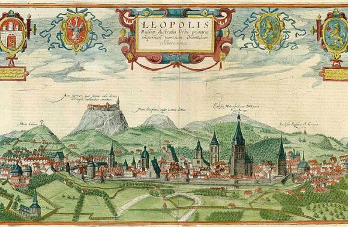

Львів - місто Лева
Львів– одне з найкрасивіших міст України та східної Європи. Щороку місто Лева відвідує понад 2,5 мільйони
туристів! Таку велику кількість прихильників можна легко пояснити – адже Львів дійсно на диво багатогранний. Хтось
їде
сюди поласувати легендарною львівською кавою чи шоколадом, хтось хоче походити по атмосферним кнайпам, хтось любить
шумні фестивалі, хтось – театр, поезію та джаз, а хтось їде за романтикою старого міста та історією. Але кожен
знайде
у місті Лева те, що шукає.

Зміст
Легенда про левів
Коли Львова ще не було, на його сучасній території можна було знайти тільки невеличкі села, заховані серед гір, що
завжди захищали селян він набігів ворогів.
Густі ліси навколо завжди допомагали селянам – тут можна було і полювати, і прогулятись чудовими теплими деньками, і
заховатись від періодичних набігів… Тож ніхто й гадки не мав, що у лісі є чого боятись.
Та одного дня селяни помітили, що почали зникати люди. Виявилось, що це справа рук Лева, який підстерігав сміливців,
що гуляли у лісі наодинці, ловив їх і затягував у свою печеру. Більше звідти ніхто не повертався.
Селяни знали, що самотужки їм зі звіром не впоратись, тому коли у місцевій корчмі з’явився сміливець – лицар, котрий
дав обіцянку вбити лева, вони вирішили зробити все, щоб допомогти.
Для того, щоб перемогти хижака, лицарю потрібні були меч та лати неймовірної міцності – такі, щоб їх не зламала
жодна сила і міць. Днями й ночами сільські майстри кували, але нічого не виходило, міцність була недостатньою. І
коли вже надії не було, порада випадкового подорожнього врятувала селян.
«Я знаю, як перемогти звіра! Усі молоді дівчата з усіх сіл повинні вколоти мізинці голкою і крапнути декілька
крапель крові до чану. А вже тоді занурити лицарські обладунки у цей чан!»
Так селянки й зробили, а сміливому лицарю вдалося перемогти ненаситного звіра!
Гору Лева біля Львова тому так і назвали, у честь цієї легенди, згідно з нею, і сам Львів названий Львовом саме
завдяки царю звірів.
Звичайно, легенди все одно залишаються легендами, а історичні факти – фактами. Проте книжкова шкільна історія – не
завжди говорить правду… І де та правда? Хто знає.
Коли заснували Львів: невже історики помиляються
Якщо розбудити будь-якого львів’янина серед ночі і запитати, хто заснував Львів, відповідь буде швидка і однозначна:
«Данило Галицький, хто ж ще».
Офіційною датою заснування Львова вважається 1256 рік – з’явилась ця дата з літопису про пожежу у місті Холм, де
вперше писемно згадали Львів. Аж зі Львова, пишуть, було видно, як палає Холм!
Насправді, висновок про більш раннє заснування Львова напрошується і без європейських літописів – адже для того, аби
бути згаданим, як повноцінне місто, у літописі про пожежу, Львів уже мав бути повноцінним містом. А це означає, що
на момент 1256 року Львів уже функціонував як місто протягом мінімум декількох років.
Крім того, існує ще декілька фактів, що свідчать про інакшу дату заснування. І пов’язані вони з ще одним відомим для
української історії іменем…
Тож леви, Данило Галицький чи може хто інший?
Ви колись чули версію про те, що Львів був заснований не в честь сина Данила Галицького Лева, а, власно, Левом
Даниловичем? Звичайно, якщо брати до уваги початкову дату – 1240 рік, то Лев тоді був ще досить молодим. Всього від
12 до 15 років.
Проте історики стверджують, що у ті часи це вважалось ледь не повноліттям, а сам Лев у 1245 році уже брав участь у
бою під Перемишлем зі своїм батьком. Це говорить про те, що вже тоді він був здатний самостійно і свідомо приймати
рішення. Проте, які є докази?
Декілька фактів, якими апелюють історики, що підтримують версію заснування нашого міста Левом Даниловичем:
-
Анонімний каталонський географ XІV ст. свідчив про те, що «з Польщею межує королівство Лева, а столицею його
є місто Лева»;
-
Записи російського мандрівника Федора Глінки за 1805 рік свідчать про 1245 рік заснування міста. І
заснування його чоловіком Белли, сестри угорського короля, якого звали Левом. Спиратись на ці свідчення
дозволяє той факт, що Глінка бував у Львівській університетській бібліотеці у 1805 році, тож цілком можливо
міг бачити документи та літописи, що не збереглися сьогодні;
-
«Князь Лев поклав мені підвалини, нащадки дали ім’я Леонтополіс», – саме такий напис, за дослідженими
істориком Леонтієм Войтовичем джерелами, прикрашав галицьку браму;
-
Ну і основне – Перемишльське та Белзьке князівства у 13 столітті уже належали Леву, а Львів був заснований
на їх межі.
У будь-якому випадку, князь Данило Галицький був видатною постаттю – відважним та справедливим, і до розвитку
Львова та навколишніх земель доклав чимало зусиль.
Тож, важко сказати, хто справді заснував Львів, проте є один факт, щодо якого немає жодних суперечок – місто у
них вийшло чудове. =)